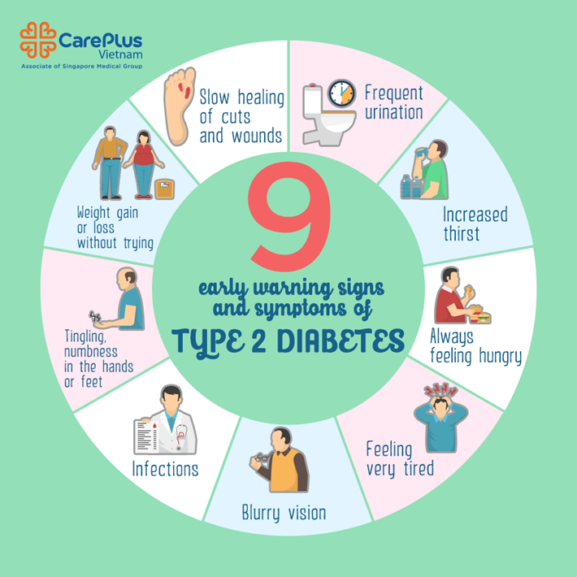

Información y Prevención
La diabetes es una enfermedad crónica que ocurre cuando el cuerpo no produce suficiente insulina o no la utiliza correctamente. Esto provoca niveles elevados de glucosa en la sangre.
El cuerpo no produce insulina. Generalmente aparece en la infancia o juventud.
El cuerpo no usa bien la insulina. Es la más común y está relacionada con el estilo de vida.
Aparece durante el embarazo y puede aumentar el riesgo de diabetes futura.
Consumir frutas, verduras, fibra y reducir azúcares y comida procesada.
Realizar al menos 30 minutos de ejercicio diario ayuda a controlar el peso.
Evitar el sobrepeso reduce significativamente el riesgo.
Realizar revisiones periódicas para detectar niveles altos de glucosa.
